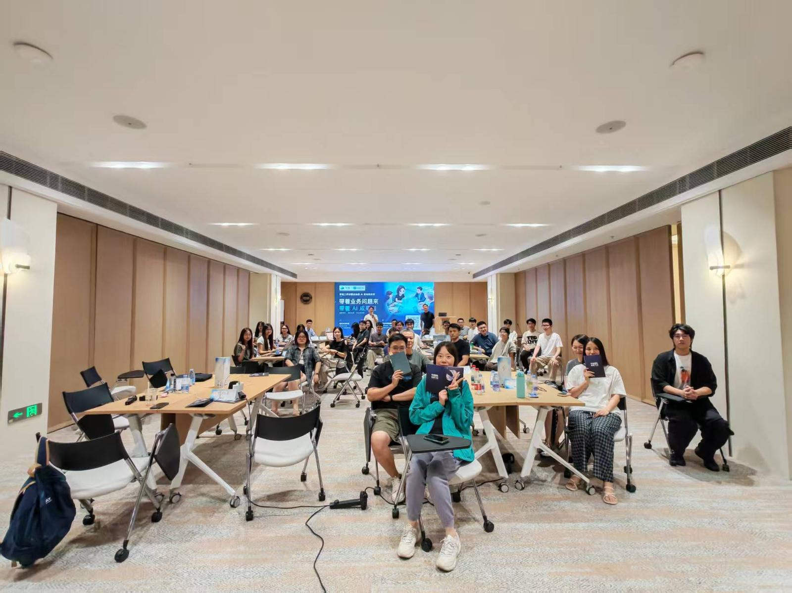
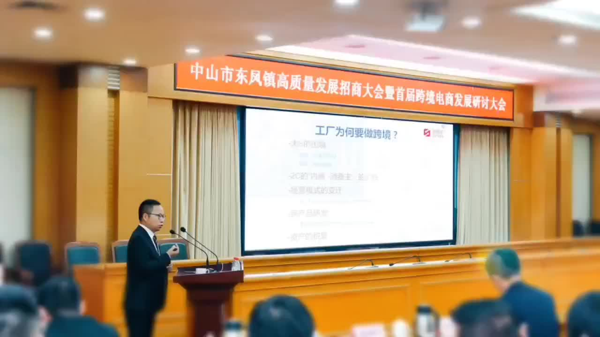
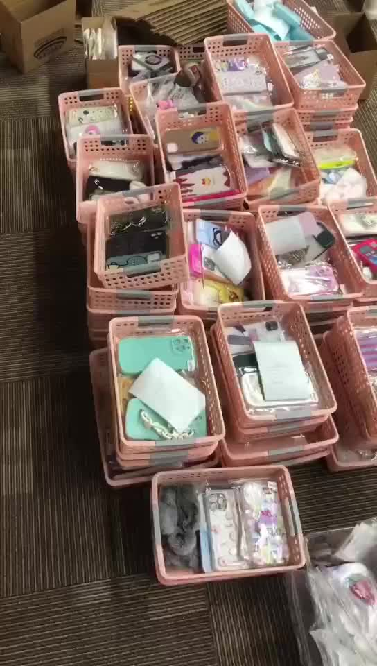
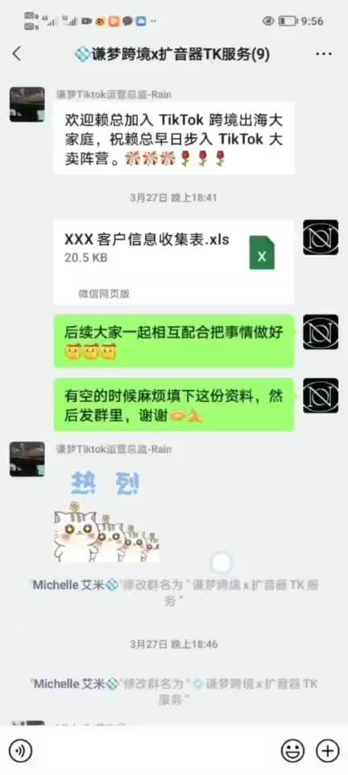

飞书生态战略合作伙伴
Strategic Partnership
作为飞书生态核心伙伴，我们不只是服务商，更是生态共建者。
- 与独角兽企业深度合作，获取第一手技术支持
- 平台级资源倾斜，优先体验最新 AI 能力
- 联合打造行业标杆案例，共享生态红利
Venture Dossier / 2026 · 中国 深圳
Michelle Zhong · 艾米
工作新习惯，先用豆包干。
成为推动企业级 AI 中台落地的领军企业。AI + 数据智能全链路优质服务提供商：AI + 咨询 + FDE + 智能体搭建。100+ 公开案例，每一条都写明做到哪一步、留下了什么，以及哪些还没做到。
深圳市谦梦传媒有限公司 · 创始人
墨尔本金融管理学院 商科
NOW / 正在做
为大客户高管线下开班、与字节跳动团队同场开会、走进客户现场——7 张现场图，一条能对得上的证据链。
打开「豆包工作」证据链 ↗
POSITION / 定位
成为推动企业级 AI 中台落地的领军企业
VISION / 愿景
成为 AI 时代的传播者和创造者
GOAL / 目标
成为国内最优质 AI + 数据智能全链路服务提供商
CORE COMPETITIVENESS / 核心优势
飞书生态共建 · 价值整合 · 全链路交付 · 行业 Know-how —— 四件事落在同一条链上。
Strategic Partnership
作为飞书生态核心伙伴，我们不只是服务商，更是生态共建者。
Value Integrator
我们专注于如何把最好的工具组合出最大的价值，而不是重复造轮子。
Full-stack Service
从认知升级到工具落地的一站式闭环服务，拒绝"烂尾楼"工程。
Deep Expertise
依托玄策 AI 研究院，持续深耕跨境电商行业 Know-how。
把中国货卖出去不难，难的是让这门生意赚到钱。
艾米 · 2026 · 深圳
01 / 四条业务主线
 LINE 01
LINE 01
从账号搭建、选品、内容到出单，把 TK 的流量做成订单；再把这套打法拆成课程与陪跑，让别人也能自己跑一遍。
 LINE 02
LINE 02
前面帮客户拿到订单，这里帮客户拿到把订单做出来的钱。从个人房产抵押、企业对公融资做起。
 LINE 03
LINE 03
AI 是成本工具，不是概念。追的是环节不是模型——这个环节原来几个人、现在几个人、质量掉没掉。只按这笔账验收。
 LINE 04
LINE 04
三项能被核对的公开记录：墨尔本商科的教育背景、政府主办研讨会的分会场演讲、东南亚财经节目的大湾区报道。
02 / 精选档案
9 条完整档案在档案页，每条都写明：做到哪一步、留下什么、哪些还没做到。
03 / 原始影像
现场、采访与业务实拍。点击播放，不做包装也不配乐。



04 / 公开背书
机构、场合、身份、主题都写明，可以在关于页看到原始材料。
财务与商业分析的底子，以及"看任何生意先算现金流"的判断习惯，都来自这里。
面向本地跨境电商卖家，讲 TikTok 的内容路径与变现方式。
东南亚英语财经新闻节目，走进粤港澳大湾区的创业现场。
05 / 时间线
从教育到三段创业，中间没有跳跃——每一步都是上一步遇到问题的答案。
养成先看现金流与单位经济模型的判断习惯。
从报价、跟单到客户维护，把手上的活做成可交接的流程。
知识付费、短视频带货、直播带货、品牌代运营——把内容流量做成订单。
客户拿到订单却没有做订单的钱，于是从抵押与对公做起。
AI + 跨境电商、AI + 传统行业获客；同时备考工信部人工智能训练师（高级）。
做推动企业级 AI 中台落地的领军者：AI + 数据智能全链路服务，飞书 × 豆包工作企业 AI 落地进行中。
06 / 四条立场
这套规矩决定了档案里能出现什么、不能出现什么。
案例里出现的每个数字，都能拿出对应材料；拿不出的，本页就不写。
一个案例值不值得看，看它能不能被复现，而不是那一次跑得多好。
AI 是成本工具。验收标准只有一条：这个环节原来几个人、现在几个人、质量掉没掉。
已交付、运行中、备考中分开写，不把"在做的"写成"做成的"。
07 / 工作系统
下面的每个环节都来自实际交付里用过的系统与流程，后面挂着对应档案。没有百分比，因为熟练度无法核对。
账号侧：手机环境完善、网络环境搭建、真实度测试、账号注册、主页优化。内容侧：营销策划方案、短视频创意、脚本拍剪、素材收集。运营侧：数据统计分析、用户运营、复盘分析。
个人房产抵押贷款方案、企业对公融资贷款方案。
AI 进入选品、文案、素材、客服四个具体环节；AI + 传统行业获客的落地路径。只按「原来几个人、现在几个人、质量掉没掉」验收。
KEEP IN TOUCH
GUESTBOOK / 访客留言
你的留言会保存到云端，所有访客都能看到。
还没有留言，来说第一句吧。